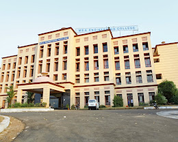

MEA Engineering College is the first NAAC accredited self-financing engineering college in Malappuram district which is committed to provide excellent and value-based education with a flair for ethics and professionalism. The College is located amidst panoramic natural beauty over-looking the hills and valleys at Nellikunnu, near Perinthalmanna – a city of various educational institutions- on the Perinthalmanna- Melattur road. The College is easily accessible by road, rail and air. The College is governed by the Muslim Educational Association (MEA) which is sponsored by the “Samastha Kerala Jammiyyathul Ulama”, a society instituted by top class intellectuals of the Muslim community. Janab Panakkad Sayed Sadique Ali Shihab Thangal is its charismatic head. The institution is affiliated to the APJ Abdul Kalam Technological University and approved by the AICTE.
The college is accredited by NAAC. As per the data released by APJ Abdul Kalam Technological University (KTU) on 15.06.2026, the college has secured the first position in Malappuram district. It also holds the 13th position among all self-financing engineering colleges in Kerala and the 30th position among all listed engineering colleges in Kerala.
| Undergraduate programs | ||
|---|---|---|
| Courses | Department | Intake |
| B.Tech | ||
| Civil Engineering | 60 | |
| Mechanical Engineering | 60 | |
| Computer Science Engineering | 60 | |
| Electrical and Electrionics Engineering | 60 | |
| Information Technology | 60 | |
| Artificial Intelligence and Data Science | 60 | |
| Artificial Intelligence and Machine Learninig | 60 | |
| Electrical & Computer Engineering | 60 | |
| BCA | Bachlors of Computer Application | 60 |
| Postgraduate programs | ||
|---|---|---|
| Courses | Department | Intake |
| MCA | ||
| Master of Computer | 30 | |